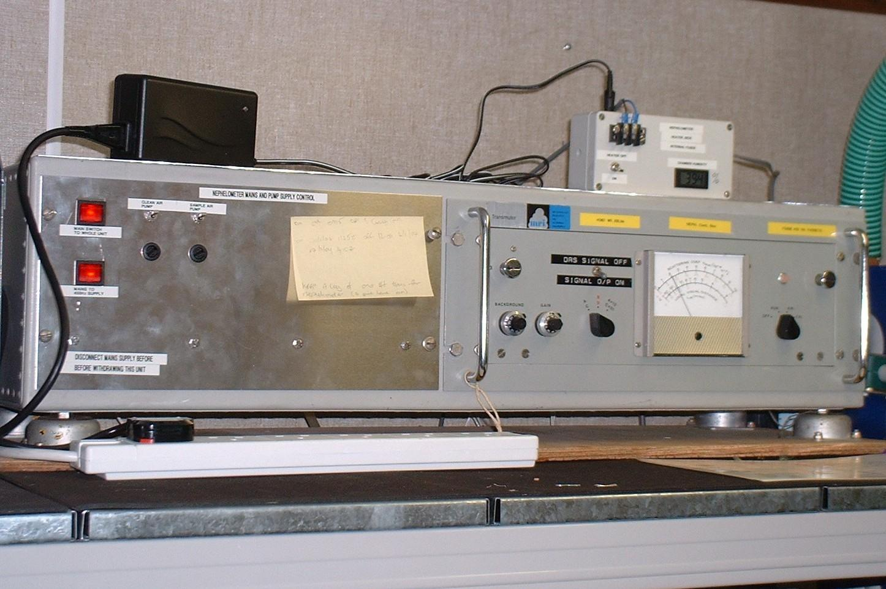
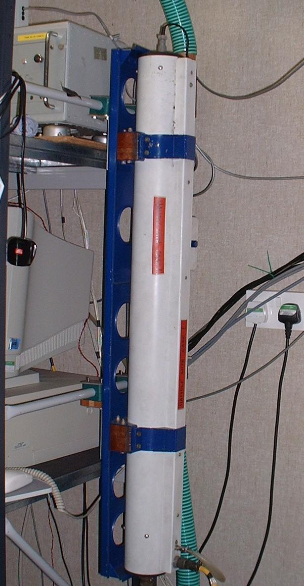
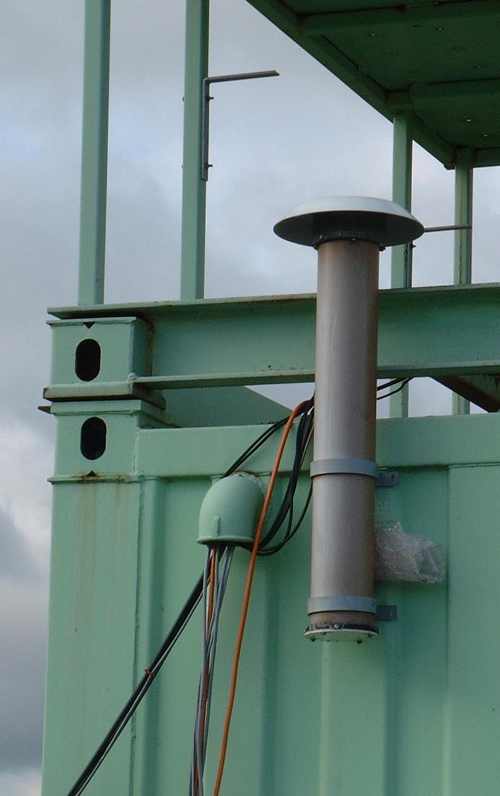

|  |  |  |
|
Above: Nephlometer control unit
Right: Optical assembly Far right: Air inlet pipe outside hut. |
Air is drawn into the the device from outside the hut using a pump, and is then passed through a heater before entering the nephelometer. The purpose of the heating is to dry the air so that the nephelometer measures the scattering coefficient of a dry aerosol population. A humidity sensor, located in the inlet pipe between the heater and the nephelometer is used to monitor the effectiveness of the dehyration, and a PRT sensor measures the temperature of the air, which is maintained at a maximum of 30oC.
The air being sampled, enters the optical assembly, which is approximately 1.2m long, and has a photomultiplier at one end of it. A xenon flashlamp illuminates the chamber, and the photomultiplier detects the light scattered from the particles in the defined sampling area. Another light detector placed below the flashlamp, is used as a reference. The xenon lamp is set to flash at a rate of once every 4 seconds.
The measurement of the scattering coefficient of light through the air, is related to the mass concentration of particulates suspended in the air, and to the visibility. Unlike, a standard visibility sensor, however this nephelometer only samples the dry aerosol population.